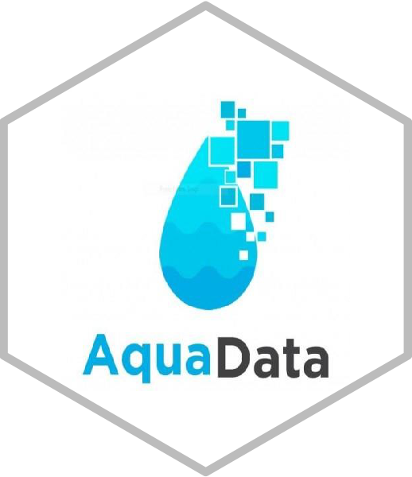

The goal of aquadata.data.mapping is to collect metadata within the context aquatic food systems in order to identify data gaps and generate new data in key geographic region: Bangladesh, Cambodia, Ghana, India, Myanmar, Nigeria, Solomon Islands, Timor-Leste and Zambia.
aquadata.data.mapping uses metadata information to download data and elaborate data stories and scientific reports’ summaries using AI tools (ChatGPT).
This repository is part of work package 1 “AquaData” of the initiative “Resilient Aquatic Food Systems for Healthy People and Planet” (https://cgspace.cgiar.org/handle/10568/121141 ).
Further info:
https://www.cgiar.org/initiative/15-resilient-aquatic-foods-for-healthy-people-and-planet/
To get started
Install and load the R package from the most recent version using the following commands on the R console:
#install.packages("devtools")
#devtools::install_github("WorldFishCenter/aquadata.data.mapping")
library(aquadata.data.mapping)Explore the data
Once installed, you can access and explore the data directly from the package. dataverse_metadata include metadata information on the data of several CGIAR organizations, while worldfish_guestbook_responses include information provided by the users downloading WorldFish data.
# Summary of dataverse_metadata
dplyr::glimpse(dataverse_metadata)
#> Rows: 21,330
#> Columns: 9
#> $ organization <chr> "AllianceBioversityCIAT", "AllianceBioversityCI…
#> $ dataset_id <int> 3248318, 3248318, 3248318, 3248318, 3248318, 32…
#> $ dataset_doi <chr> "doi:10.7910/DVN/DAYUIL", "doi:10.7910/DVN/DAYU…
#> $ publication_date <date> 2021-03-11, 2021-03-11, 2021-03-11, 2021-03-11…
#> $ title <chr> "environmental awareness and attitudes among st…
#> $ subject <chr> "Agricultural Sciences", "Agricultural Sciences…
#> $ keyword_value <chr> "climate change", "climate change adaptation", …
#> $ keyword_vocabulary <chr> "AGROVOC", "AGROVOC", "AGROVOC", NA, "AGROVOC",…
#> $ keyword_vocabulary_uri <chr> "http://aims.fao.org/aos/agrovoc/c_1666", "http…
# CGIAR organizations
unique(dataverse_metadata$organization)
#> [1] "AllianceBioversityCIAT" "ASTI" "CCAFSbaseline"
#> [4] "CIAT" "IFPRI" "RiceResearch"
#> [7] "worldfish"
# Summary of worldfish_guestbook_responses
dplyr::glimpse(worldfish_guestbook_responses)
#> Rows: 8,529
#> Columns: 16
#> $ guestbook <chr> "WorldFish Guestbook", "WorldFish Guestbook", "WorldF…
#> $ title <chr> "myanmar baseline aquaculture performance assessment"…
#> $ dataset_doi <chr> "doi:10.7910/DVN/MIYZYQ", "doi:10.7910/DVN/MIYZYQ", "…
#> $ publication_date <date> 2022-12-26, 2022-12-26, 2022-12-26, 2022-12-26, 2022…
#> $ type <chr> "Download", "Download", "Download", "Download", "Down…
#> $ file_name <chr> "20190719 G01_food_certification.tab", "20190719 D07_…
#> $ file_id <int> 3677836, 3677828, 3677827, 3677821, 3677819, 3677851,…
#> $ file_doi <chr> "doi:10.7910/DVN/MIYZYQ/UW6ZPH", "doi:10.7910/DVN/MIY…
#> $ user_name <chr> "huabin liu", "huabin liu", "huabin liu", "huabin liu…
#> $ email <chr> "huabin.liu@outlook.com", "huabin.liu@outlook.com", "…
#> $ institution <chr> "gw", "gw", "gw", "gw", "gw", "gw", "gw", "gw", "gw",…
#> $ position <chr> NA, NA, NA, NA, NA, NA, NA, NA, NA, NA, NA, NA, NA, N…
#> $ question_1 <chr> "Briefly describe how the data will be used", "Briefl…
#> $ answer_1 <chr> "research", "research", "research", "research", "rese…
#> $ question_2 <chr> "Where are you located?", "Where are you located?", "…
#> $ answer_2 <chr> "nc", "nc", "nc", "nc", "nc", "nc", "nc", "nc", "nc",…You can filter the data using the filterby_word function and show the first 10 rows:
filtered_metadata <- filterby_word(word = "Bangladesh")
head(filtered_metadata)
#> # A tibble: 6 × 9
#> organization datase…¹ datas…² publicat…³ title subject keywo…⁴ keywo…⁵ keywo…⁶
#> <chr> <int> <chr> <date> <chr> <chr> <chr> <chr> <chr>
#> 1 ASTI 2693658 doi:10… 2015-11-03 asti… Arts a… bangla… AGROVOC http:/…
#> 2 ASTI 2693658 doi:10… 2015-11-03 asti… Social… bangla… AGROVOC http:/…
#> 3 ASTI 2693658 doi:10… 2015-11-03 asti… Arts a… south … AGROVOC http:/…
#> 4 ASTI 2693658 doi:10… 2015-11-03 asti… Social… south … AGROVOC http:/…
#> 5 ASTI 2693658 doi:10… 2015-11-03 asti… Arts a… asia AGROVOC http:/…
#> 6 ASTI 2693658 doi:10… 2015-11-03 asti… Social… asia AGROVOC http:/…
#> # … with abbreviated variable names ¹dataset_id, ²dataset_doi,
#> # ³publication_date, ⁴keyword_value, ⁵keyword_vocabulary,
#> # ⁶keyword_vocabulary_uriGenerate stories using AI
Use AI tools (ChatGPT) to generate stories from downloaded data.
#output <-
# summarise_chatgpt_wrapper(
# document_path = "inst/docs_dataverse/5636634.txt",
# openaikey = OPENAI_TOKEN,
# engine = "gpt-3.5-turbo",
# temperature = 0.7,
# refine_text = REFINE_TEXT
# )
#cat(output$output_text)